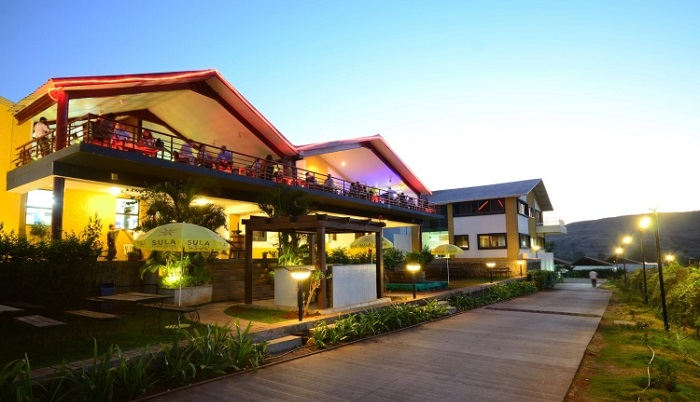

Panchvati
Holy land for the believers of Ramayana, Panchvati attracts a lot of pilgrims. A serene town located near Nasik, the site offers small sightings having a lot of significance in the epic of Ramayana.

Sula Vineyard
The Sula Vineyards is a famous winery that is located in Nashik, 180 kilometres to the northeast of Mumbai and is renowned for its varieties of grape wines, such as Chenin Blanc, Sauvignon Blanc, Riesling and Zinfandel.
Saptashrungi
Saptashrungi is a Hindu pilgrimage spot located around 60 km from Nasik. The temple of the goddess Saptashrungi Nivasin is also the half 'Shaktipeeth' of the three and a half Shaktipeeths located in Maharashtra